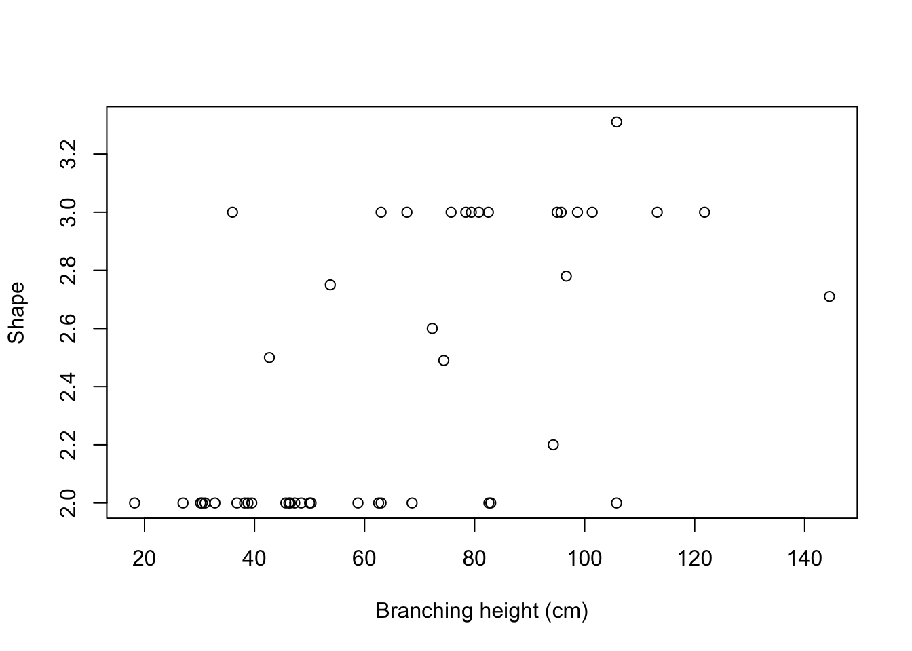
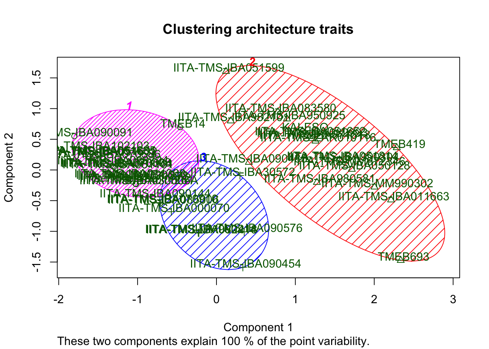
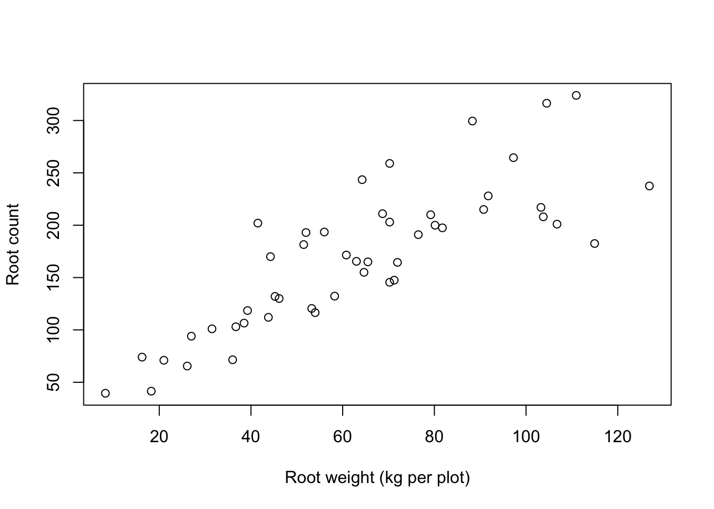
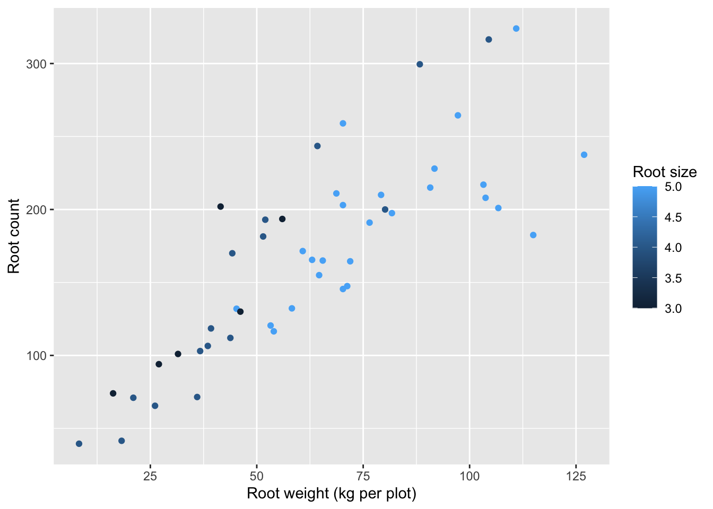
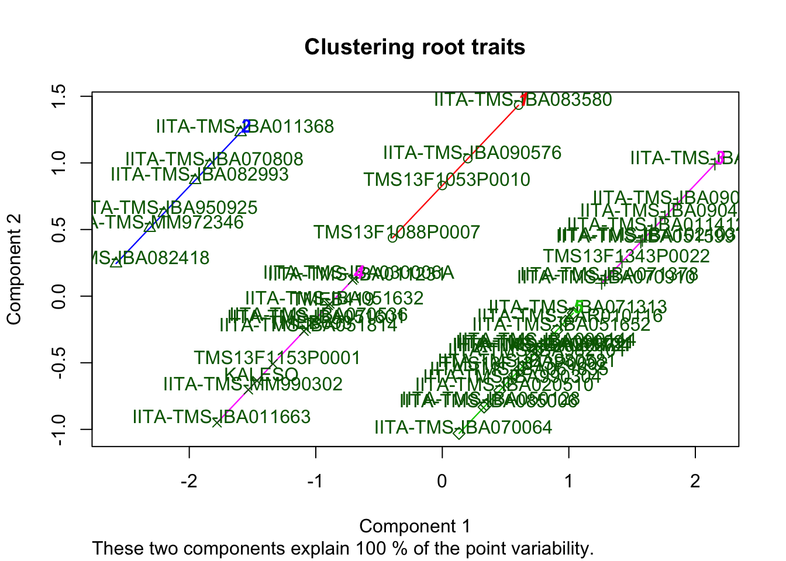

Last updated: 2020-03-29
Checks: 6 1
Knit directory: 18_PYT52/
This reproducible R Markdown analysis was created with workflowr (version 1.6.1). The Checks tab describes the reproducibility checks that were applied when the results were created. The Past versions tab lists the development history.
Great! Since the R Markdown file has been committed to the Git repository, you know the exact version of the code that produced these results.
Great job! The global environment was empty. Objects defined in the global environment can affect the analysis in your R Markdown file in unknown ways. For reproduciblity it’s best to always run the code in an empty environment.
The command set.seed(20200326) was run prior to running the code in the R Markdown file. Setting a seed ensures that any results that rely on randomness, e.g. subsampling or permutations, are reproducible.
Great job! Recording the operating system, R version, and package versions is critical for reproducibility.
To ensure reproducibility of the results, delete the cache directory Radar_new_cache and re-run the analysis. To have workflowr automatically delete the cache directory prior to building the file, set delete_cache = TRUE when running wflow_build() or wflow_publish().
Great job! Using relative paths to the files within your workflowr project makes it easier to run your code on other machines.
Great! You are using Git for version control. Tracking code development and connecting the code version to the results is critical for reproducibility.
The results in this page were generated with repository version d49299a. See the Past versions tab to see a history of the changes made to the R Markdown and HTML files.
Note that you need to be careful to ensure that all relevant files for the analysis have been committed to Git prior to generating the results (you can use wflow_publish or wflow_git_commit). workflowr only checks the R Markdown file, but you know if there are other scripts or data files that it depends on. Below is the status of the Git repository when the results were generated:
Ignored files:
Ignored: .DS_Store
Ignored: .Rapp.history
Ignored: .Rhistory
Ignored: .Rproj.user/
Ignored: analysis/.DS_Store
Ignored: analysis/Radar_new_cache/
Ignored: data/.DS_Store
Untracked files:
Untracked: Icon
Untracked: analysis/200325_Random_forest.Rmd
Untracked: analysis/Radar_new1.Rmd
Untracked: analysis/WorkflowR.Rmd
Untracked: analysis/repair_wd.Rmd
Untracked: data/18.CASS.PYT.52.IB_Harvest_Aerial.csv
Untracked: data/CASS_SelectedClones_HISTORICALPHENODATA.xlsx
Untracked: data/average_shape.csv
Untracked: data/average_shape.xls
Untracked: data/phenotype_Branching_data.csv
Untracked: data/phenotype_data.xls
Untracked: output/bh_sh_plot.png
Untracked: output/clus_arch?newfile.png
Untracked: output/clus_roots.png
Unstaged changes:
Modified: analysis/200324_RADAR_select_clones.Rmd
Deleted: analysis/licence.Rmd
Note that any generated files, e.g. HTML, png, CSS, etc., are not included in this status report because it is ok for generated content to have uncommitted changes.
These are the previous versions of the repository in which changes were made to the R Markdown (analysis/Radar_new.Rmd) and HTML (docs/Radar_new.html) files. If you’ve configured a remote Git repository (see ?wflow_git_remote), click on the hyperlinks in the table below to view the files as they were in that past version.
| File | Version | Author | Date | Message |
|---|---|---|---|---|
| Rmd | d49299a | amgvandoorn | 2020-03-29 | wflow_publish(“analysis/Radar_new.Rmd”) |
For this RADAR project we are planting trials in 3 locations with 5 different clones with a range of root sizes and yield. To select these 5 clones we need to look at aboveground plant architecture. To be able to walk through the plots with the scanner, we need clones with an umbrella shape and high first branching height.
The approach is to first cluster the available genotypes into 3 clusters based on shape (sh) and branching height (bh). Form this we select the cluster with clones close to umbrella (category 3) and high branching height. This data comes from historical data files.
Then we cluster the clones into 5 clusters based on root fresh yield and size. These trait values we take from the PYT52 2018/2019 harvest data. To ensure we have a selection spanning the whole range we select one clone from each cluster, provided they are in the umbrella+high branching cluster.
For the plant architechture we have two files that are based on several years of data collection. The first file contains a shape (sh) classification 1-4, where 1= Compact; 2= Open; 3=Umbrella and 4= Cylindrical.
The second file contains data on branching height (bh). This is mostly scored in cm, but in some area’s and years this was visually classed from 1-6. The visual scoring is removed, and only branching height in cm is used. Then we select genotypes that are close to a shape of 3, with high branching height.
# import historical data for shape and branching
shape=read.csv(here("data/average_shape.csv"))[,c(1,4)]
colnames(shape)=c("clone", "sh")
shape=completeFun(shape, "sh")
branch=read.csv(here("data/phenotype_Branching_data.csv"))[c(4,11)]
colnames(branch)=c('clone', 'bh')
#remove branching height below 7. Most recorded data is in cm, some are classed from 1-6.
branch=branch[branch$bh>6,]
#The shape data is already averaged over years and locations, the branching height data is not.
branch_m=aggregate(branch[,2], list(branch$clone),mean)
colnames(branch_m)=c("clone", "bh")
# merge branching data with shape data into an architecture data frame
arch=completeFun(dplyr::left_join(shape, branch_m, by='clone'), "sh")
with(arch, plot(bh, sh, xlab='Branching height (cm)', ylab='Shape'))
# Make three clusters based on branching height and shape
# Scaled values
clus1=scale(dplyr::select(arch,-clone))
rownames(clus1)=arch$clone
# Fit the k-means function with 5 clusters
fit_arch=kmeans(clus1, 3)
arch$fit.arch=fit_arch$cluster
clusplot(clus1, fit_arch$cluster, color=T, shade=T, labels=2, lines=0, main="Clustering architecture traits")
From this result we select cluster number 3 which contains the clones with the best combination of umbrella shape and high first branching height.
From the complete PYT52 2018/2019 dataset, we select root weight (rtwt), which is fresh weight, and root number (rtno) and root size (rtsz).
#import 18/19 data file
data18 = read.csv(here("data/18.CASS.PYT.52.IB_Harvest_Aerial.csv"),skip = 1)
data18_m=aggregate(data18[, 18:98], list(data18$accession_name), mean, na.rm=FALSE)
data18_m=completeFun(data18_m, "rtsz")
colnames(data18_m)[1] ="clone"
with(data18_m, plot(rtwt, rtno, xlab="Root weight (kg per plot)", ylab= "Root count"))
print(with(data18_m, cor(rtwt, rtno)))[1] 0.8255865# Because root weight correlates to well with root number, it does not anything to a clustering on weight alone. Therefore we also look at root size.
ggplot(data18_m, aes(x=rtwt, y=rtno, colour=rtsz))+
geom_point()+
labs(x="Root weight (kg per plot)", y= "Root count", colour="Root size")
print(with(data18_m, cor(rtwt, rtsz)))[1] 0.6144352We see that the root number and total plot weight are strongly related, but there is more variation in the root size. Hence, for the clustering we will take root size and root weight.
clus2=scale(data.frame(rtwt=data18_m$rtwt, rtsz=data18_m$rtsz))
rownames(clus2)=data18_m$clone
# Fit the k-means function with 5 clusters
fit_r=kmeans(clus2, 5)
clusplot(clus2, fit_r$cluster, color=T, shade=T, labels=2, lines=0, main="Clustering root traits")
root=data.frame(dplyr::select(data18_m, clone, rtwt, rtsz), fit_r$cluster)
arch_select=dplyr::select(arch[arch$fit.arch==2,], -fit.arch)
select=dplyr::left_join(arch_select, root, by="clone")
select=select[order(select$fit_r.cluster),]
rownames(select)=NULL
#Select one clone from each of the fit_r.cluster column categories
select clone sh bh rtwt rtsz fit_r.cluster
1 IITA-TMS-IBA083580 3.00 63.00000 104.50 4 1
2 IITA-TMS-IBA082993 3.00 79.40000 41.50 3 2
3 IITA-TMS-IBA950925 3.00 67.70000 31.50 3 2
4 IITA-TMS-MM972346 3.00 98.69400 27.00 3 2
5 IITA-TMS-IBA051599 3.00 36.00000 103.25 5 3
6 IITA-TMS-IBA090485 2.60 72.30000 110.95 5 3
7 IITA-TMS-IBA011663 3.00 121.80000 8.25 4 4
8 IITA-TMS-IBA051814 3.00 95.00000 36.00 4 4
9 IITA-TMS-MM990302 3.00 113.20000 18.25 4 4
10 KALESO 3.00 75.72500 21.00 4 4
11 TMEB419 3.31 105.82451 43.80 4 4
12 TMEB693 2.71 144.51250 36.70 4 4
13 IITA-TMS-IBA050128 3.00 101.37167 54.00 5 5
14 IITA-TMS-IBA051652 3.00 78.40000 76.50 5 5
15 IITA-TMS-IBA071313 3.00 80.78750 81.75 5 5
16 IITA-TMS-IBA980581 2.78 96.67238 65.50 5 5
17 IITA-TMS-IBA982101 2.75 53.76906 68.70 5 5
18 IITA-TMS-IBA990304 3.00 95.73333 60.80 5 5
19 IITA-TMS-ZAR010116 3.00 82.50000 79.20 5 5
sessionInfo()R version 3.6.3 (2020-02-29)
Platform: x86_64-apple-darwin15.6.0 (64-bit)
Running under: macOS Catalina 10.15.3
Matrix products: default
BLAS: /Library/Frameworks/R.framework/Versions/3.6/Resources/lib/libRblas.0.dylib
LAPACK: /Library/Frameworks/R.framework/Versions/3.6/Resources/lib/libRlapack.dylib
locale:
[1] en_US.UTF-8/en_US.UTF-8/en_US.UTF-8/C/en_US.UTF-8/en_US.UTF-8
attached base packages:
[1] stats graphics grDevices utils datasets methods base
other attached packages:
[1] ggplot2_3.3.0 corrplot_0.84 here_0.1 readr_1.3.1
[5] cluster_2.1.0 plyr_1.8.6 tm_0.7-7 NLP_0.2-0
[9] workflowr_1.6.1
loaded via a namespace (and not attached):
[1] Rcpp_1.0.4 pillar_1.4.3 compiler_3.6.3 later_1.0.0
[5] git2r_0.26.1 tools_3.6.3 digest_0.6.25 lifecycle_0.2.0
[9] gtable_0.3.0 evaluate_0.14 tibble_2.1.3 pkgconfig_2.0.3
[13] rlang_0.4.5 yaml_2.2.1 parallel_3.6.3 xfun_0.12
[17] dplyr_0.8.5 withr_2.1.2 stringr_1.4.0 knitr_1.28
[21] xml2_1.2.5 fs_1.3.2 vctrs_0.2.4 hms_0.5.3
[25] grid_3.6.3 rprojroot_1.3-2 tidyselect_1.0.0 glue_1.3.2
[29] R6_2.4.1 rmarkdown_2.1 farver_2.0.3 purrr_0.3.3
[33] magrittr_1.5 whisker_0.4 scales_1.1.0 backports_1.1.5
[37] promises_1.1.0 htmltools_0.4.0 assertthat_0.2.1 colorspace_1.4-1
[41] httpuv_1.5.2 labeling_0.3 stringi_1.4.6 munsell_0.5.0
[45] slam_0.1-47 crayon_1.3.4